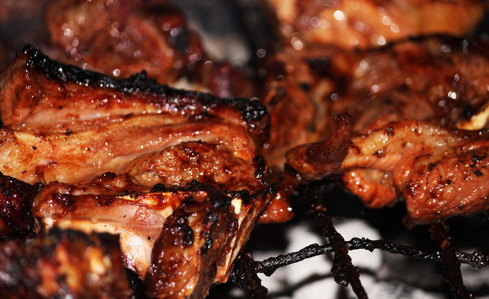

Presented by Johnnie's culinary point

This dish is an integral part of Kenyan cuisine. It is a favorite of many people in Kenya and Tanzania. It does not slide off the bone and is a serious meat. It is not a buttery dish, but rather a hearty and satisfying meal. If you’re traveling to Kenya, you can enjoy nyama choma while enjoying the landscape. The locals of the Maasai serve it as cultural ambassadors for tourism in the country.
When you visit Kenya, be sure to try the nyama choma - this dish is very popular with locals. This dish is made by grilling meat over an open fire. In fact, men used to joke about cooking meat outdoors while women ate less-delicious cuts. The meat should be grilled over fire for one and a half hours, and covered with aluminum foil. In addition, it is served with a side salad of chopped vegetables, or even a fresh vegetable salad called kachumbari.
Course: Dinner, Party | Cuisine: African | Keyword: Nyama Choma | CookingStyle: Baking, Grilling | Prep Time: 15 minutes minutes | Cook Time: 25 minutes minutes | Total Time: 40 minutes minutes | Servings: 6 servings | Calories: 399kcal
PS: The nyama choma is a popular dish in Kenya. Its name means "barbecued meat," and it is a staple of Kenyan cuisine. It is served with chicken, beef, or goat. It is very delicious, and it can be enjoyed by the whole family. A typical meal with nyama choma will cost around $7.95. It is often served with ugali, a staple maizemeal.
Serving: 4servings | Calories: 399kcal | Carbohydrates: 2g | Protein: 19g | Fat: 35g | Saturated Fat: 11g | Cholesterol: 82mg | Sodium: 443mg
Happy cooking.